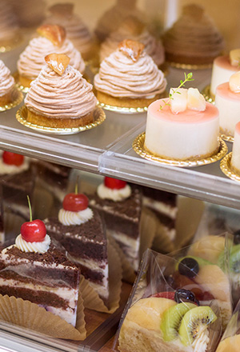

工房販売は、毎週金曜日。
「どれでも好きなのを選んでいいんだよ」 卵や乳のアレルギーをお持ちのお子様に嬉しそうに語りかけるご家族を店頭で見かけるたび、安心・安全なお菓子をつくる責任を感じます。 卵、乳、白砂糖をつかわないお菓子は、市販の材料が使えないことが多いため、一から手作りする必要があり、1回の販売のための仕込みに4日ほどかかります。 そのため、ご不便をおかけしますが、定期的な販売は金曜日のみとさせて頂いております。 毎週ていねいに手作りするクッキーやマフィン、生菓子には、有機栽培や無農薬、減農薬の季節のフルーツや木の実をたっぷりと使用しています。 旬の果物のおいしい時期はとても短くて、中には一週間で終わってしまうものも。 天候によっては、入荷が次の週になったり、入って来なかったりすることもあるので、mocoのおやつは毎週とっても気まぐれです。 工房販売には、美濃加茂市周辺市町村をはじめ、岐阜市や名古屋市など遠方からも多くのお客様がいらっしゃるため、確実なお受け取りにはお取り置きをおすすめしております。 お品書きは、販売前日の夜、ブログやLINE、Facebookでお知らせしています。ぜひご覧ください。